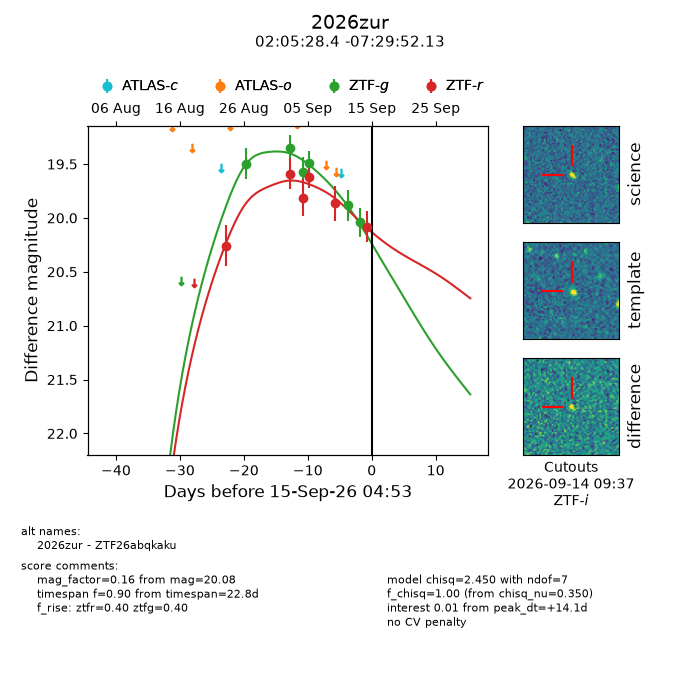
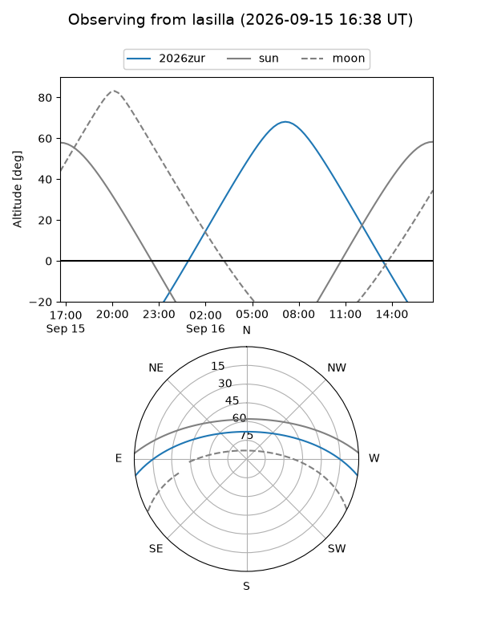
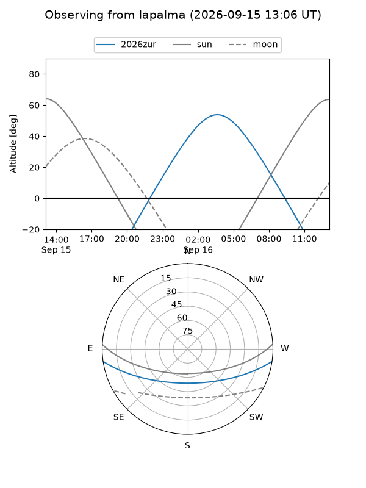
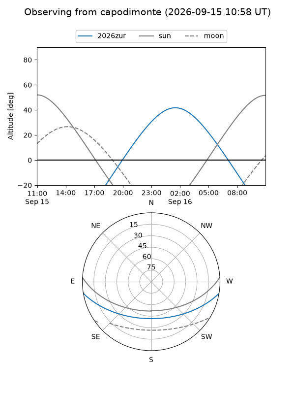
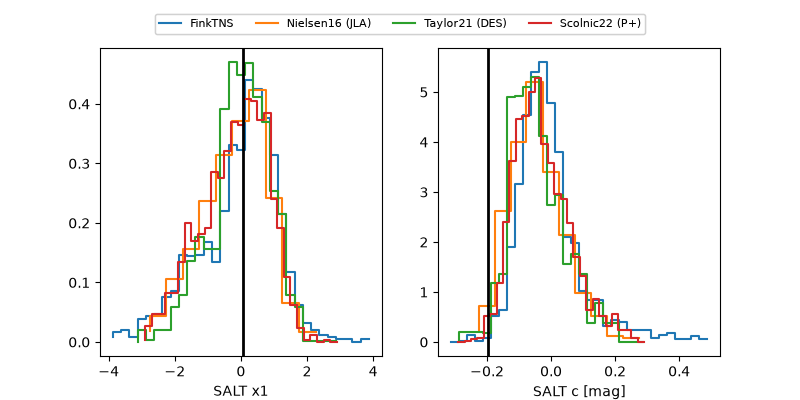

2026zur
Target 2026zur at 2026-09-15 16:55
Aliases and brokers:
FINK-ZTF: ztf.fink-portal.org/ZTF26abqkaku
Lasair-ZTF: lasair-ztf.lsst.ac.uk/objects/ZTF26abqkaku
ALeRCE-ZTF: alerce.online/object/ZTF26abqkaku
YSE-PZ: ziggy.ucolick.org/yse/transient_detail/2026zur
TNS name: wis-tns.org/object/2026zur
Direct TNS query: direct search
alt names
ZTF26abqkaku (ztf,fink_ztf)
2026zur (tns,yse)
Coordinates:
equatorial (ra, dec) = 31.3684,-7.49781
equatorial (HMS+DMS) = 02:05:28.41,-07:29:52.13
galactic (l, b) = (168.1301,-63.66784)
Flags:
TNS type: nan
peak dt: +14.6
Photometry:
last ztfg=20.04, ztfr=20.08
6 ztfg, 6 ztfr detections
Lightcurve

Visibility



Additional plots
